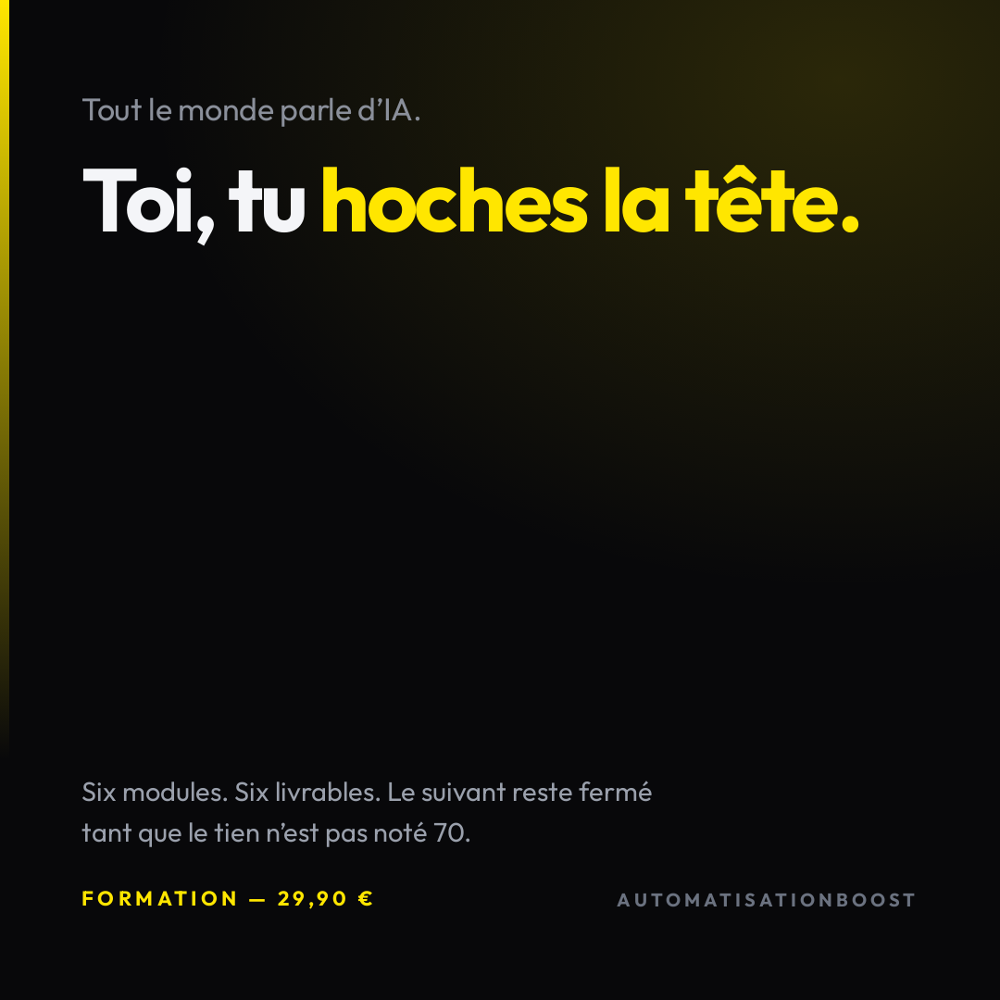
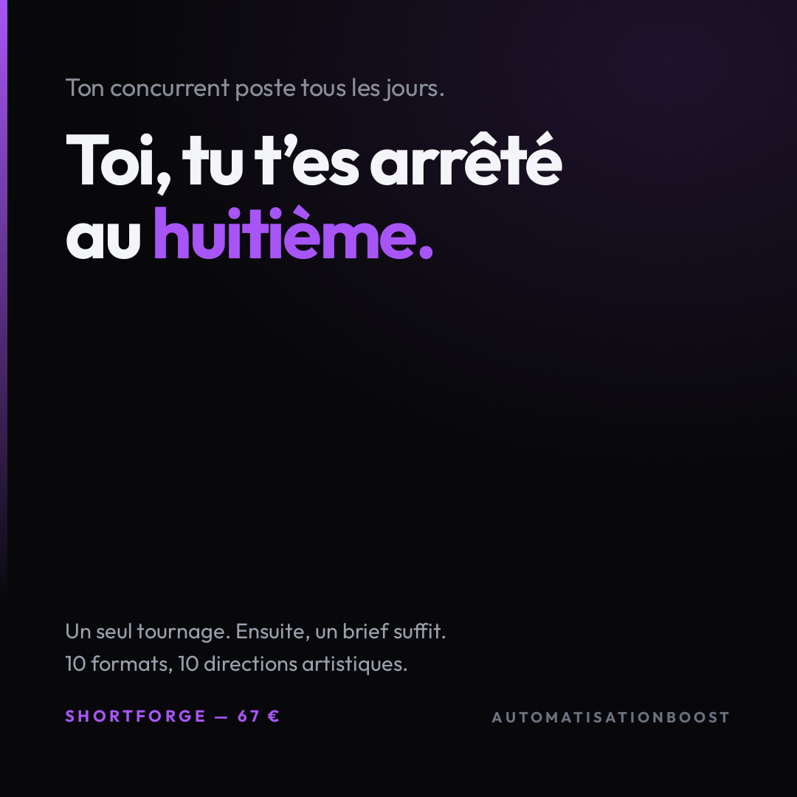
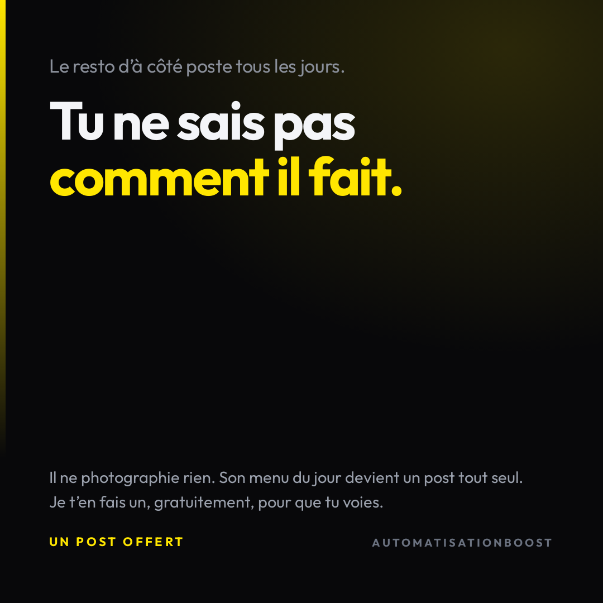

Angle que tu as donné : « tu te sens largué par l'IA ».
Les créas actuelles racontent une douleur de process — « deux heures pour vingt secondes ». C'est vrai, et ça se remet à demain.
Celle que tu as nommée est une douleur de position : quelqu'un d'autre avance, pas toi. On ne remet pas à demain le sentiment de se faire distancer.
Chaque visuel oppose donc deux lignes : ce que font les autres, petit et gris, et où tu en es, énorme et blanc. C'est l'écart de taille qui pique, aucun adjectif ne travaille.

« Ici tu ne cliques pas sur "suivant". Tu écris. »
Ça décrit le produit. Le lecteur n'a aucune raison de se sentir concerné.
« Tout le monde parle d'IA. Toi, tu hoches la tête. »
« Tu as regardé cinquante vidéos, ouvert trois comptes, payé un abonnement que tu n'utilises plus. Et concrètement, rien n'a changé. »

« Deux heures. Pour vingt secondes. »
Une liste de sept corvées. C'est du temps perdu — désagréable, pas urgent.
« Ton concurrent poste tous les jours. Toi, tu t'es arrêté au huitième. »
« Regarde son compte, puis le tien. Le sien bouge. Le tien s'est figé un mardi de juin, et à chaque fois que tu l'ouvres, ça te coûte un peu. »

« Ton menu du jour, personne ne le lit sur l'ardoise. »
Vrai, mais impersonnel. Aucun visage en face.
« Le resto d'à côté poste tous les jours. Tu ne sais pas comment il fait. »
« Il n'a pas d'agence. Il ne photographie rien. Son menu du jour devient un post tout seul. »
Les trois créas existent dans ton compte et Meta a bien rendu les visuels — j'ai vérifié l'aperçu, ce n'est pas une maquette.
Je ne les ai pas mises à la place des actuelles. Remplacer la créa d'une pub qui tourne, c'est changer ce qui part vers le public : c'est ta décision, pas la mienne. Dis-moi oui et je bascule les trois en une commande.
Les visuels sont faits ici, sans génération d'image : zéro centime.